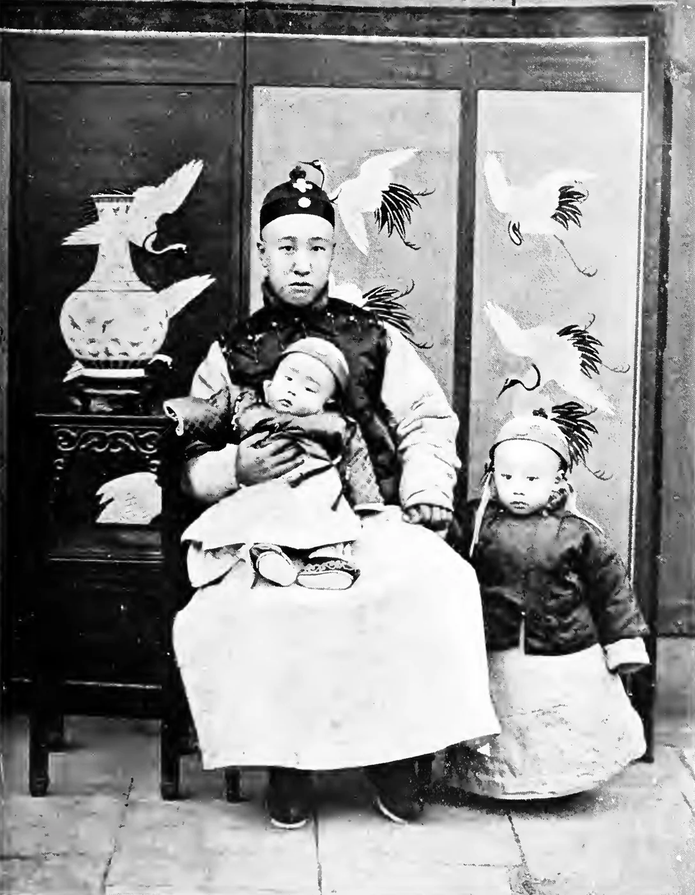

Session 01Public domain.
Materials ready
From Dynasty to Disorder
The last Qing reforms and the Revolution of 1911. A republic, an aspiring emperor, and the rise of the warlords.
Class slidesFrom Dynasty to Disorder (opens in a new tab)
Class worksheetDiagnosing China (opens in a new tab)
The slides include the China in Revolution documentary clip. The worksheet includes the chart, video questions, and exit ticket.
Review & reading5 resources
- Cutting the QueueStudy Buddy · Lecture 1 · Last Qing reforms and 1911 · Cloudflare sign-in (opens in a new tab)
- The President Who Would Be EmperorStudy Buddy · Lecture 2 · Yuan Shikai and the warlords · Cloudflare sign-in (opens in a new tab)
- Chapter 24 Reading GuideQuestions to guide your reading of Ebrey (opens in a new tab)
- Cutting the QueueBackground essay · Lecture 1 (opens in a new tab)
- The President Who Would Be EmperorBackground essay · Lecture 2 (opens in a new tab)